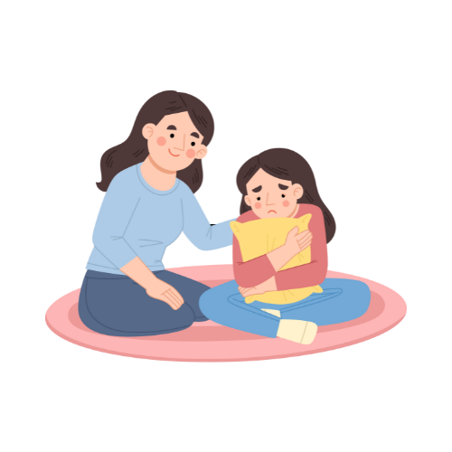

Possíveis Soluções
Muitas meninas acabam ficando grávidas muitas vezes por não terem o conhecimento necessário, por isso trouxemos algumas soluções
- Educação sexual
- Currículo Escolar: Integrar a educação sexual nas escolas, abordando métodos contraceptivos e saúde sexual.
- Workshops: Realizar workshops em escolas e comunidades sobre contracepção e prevenção.
- Acesso a contraceptivos
- Disponibilidade: Oferecer métodos contraceptivos gratuitos ou baratos em escolas e clínicas.
- Orientação: Fornecer aconselhamento sobre opções contraceptivas e seus efeitos.
- Suporte Psicológico
- Apoio Emocional: Disponibilizar serviços de apoio psicológico para adolescentes.
- Mentoria: Criar programas de mentoria para orientação sobre sexualidade e planejamento familiar.
- Envolvimento dos Pais
- Educação para Pais: Oferecer programas para pais sobre como falar de sexualidade e contracepção com seus filhos.
- Guias e Recursos: Disponibilizar recursos para ajudar pais a apoiar seus filhos.
- Políticas e Parcerias
- Advocacia: Trabalhar para criar políticas que promovam educação sexual e acesso a contraceptivos.
- Parcerias Comunitárias: Colaborar com escolas, ONGs e autoridades para uma abordagem integrada.
